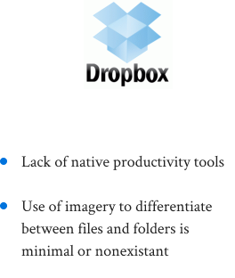
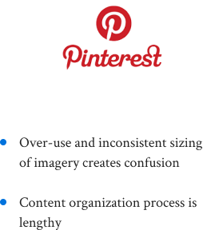
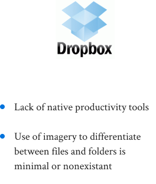
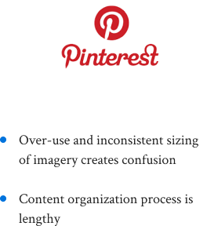

Problem
How can we design a cloud storage service that's intuitive for casual users but has the power and efficieny needed by professionals?
Solution
Through user research, analysis, testing, and prototyping, I was able to design Cloud World. The process showed that users wanted all the expected cloud service capabilities but with none of the clutter.
Competitive Analysis
In order to see how a new entity could enter this crowded marketplace, I needed to check out some of the leaders of the cloud service world. After playing around with Google Drive, Dropbox, and Pinterest, I noticed the confusion of navigating or organizing my own files. I noted that despite all the available features, it wouldn't matter if a user had trouble getting to them.
 



User Survey
I created a survey and sent it out to family, friends, and various social channels to get a good idea of my target audience. I found that navigation and visual appeal were recurring issues.
82.2%
Use cloud storage to share files or content with others.
82.4%
Rely on cloud storage for both professional and peresonal needs.

Personas
My personas focused on two different groups: working professionals and casual users such as students. Both sides seek an easy-to-use service that fulfills their needs in the most efficient way.
Edward
Goals
- Real-time collaboration across multiple users
- Auto-save features & version history
- Intuitive content organization
Frustrations
- Tracking multiple files shared across many users
- Downloaded content takes up space quickly
- High volume of content leads to organizational issues
Motivations
Edward is at the end of his undergraduate career and only has a few more assignments, papers, and tests left. Although he has a few group projects, he's not worried since his groups have been effecitvely working through shared files. His biggest worry is a paper he had to start over due to his computer dying on him before he saved. The final stretch of college has been hectic and Edward is just trying to stay organized along the way.
Cathy
Goals
- Ability to collaborate & share files
- Free service or low-fee subscription
- Acessibility from anywhere at any time
Frustrations
- Syncing issues when working across multiple devices
- Free options are limited in their features
- Available options sometimes require internet access to proceed
Motivations
Cathy is deeply involved in her career and regularly has to collaborate on documents with associates and clients. Although she makes a steady income, she is very conscious about her purchases. While she enjoys sitting behind her desk, Cathy is constantly moving throughout the day which means she must be able to access her work frequently from mobile devices.
User Flows
These user flows map out the high importance user stories. The process made it easier to spot unnecessary steps or dead ends. My goal was to ensure that completing each task took as few steps as possible.


Wireframes
I tried to step away from the typical visual structure of a cloud storage service. I opted for a more minimalist approach and depended on images and icons rather than lists or grids. I began by sketching out my user flows and eventually created wireframes to start giving Cloud World an identity.


Usability Testing Round 1
Once finished with the wireframes, I ran some tests to see how users would respond to a radical change in layout for a cloud storage service. Many changes were made but the positive response on the user-friendliness made me continue my visual ideas.

Users had no way of navigating around other than using the horizontal carousel.
Added quick links to the top of the dashboard to give easy access to all sections.
Brand Identity


Headline 1: 42px
Headline 2: 36px
Headline 3: 24px
Paragraph 1: 18px
Paragraph 2: 14px
Paragraph 3: 12px


Mockups & Prototype v.1
My initial mockups contained a lot of my ideas on color contrasting and ways to draw attention to certain elements. However I soon found out that I had oversized many parts and had not made a good use of whitespace.


Preference Testing
I decided to run some preference tests on major parts of the site to see if users agreed with coloring decisions as well as the placement or use of certain images. This is where I received confirmation that whitespace and allowing my design to breath was a huge necessity.


Testers decided that buttons should not be colored in and opted for a subtly colored border instead. Quick links in the top navigation also lost the color treatment to free up more white space.


In a choice between arrow design for the side-scrolling menu, testers decided that a small linear colored arrow was better than a large triangular white arrow.
Mockups & Prototype v.2
My second round of mockups tried a more simplistic approach with the exclusion of excess coloration to attract attention. However my designs still had the issue of unnecessarily large elements.


Usability Testing Round 2
The user tests I conducted by now focused less on aesthetics and more on functionality. The biggest change being to the storage view as I decided it was better to display more information to the user rather than to be stubborn about keeping the rotating/side-scrolling feature I had initially wanted.

Evolution
Cloud World
My mockups went through more iterations as I sought a balance in functionality and visual design. The biggest change was to the dashboard which saw the removal of the revolving feature and condensed all sections into one screen for easier access. This was an immense improvement to the navigation and sizing problems that remained from the beginning.


Conclusion
The creation of Cloud World was a huge learning experience for me. My attempts of going away from the norm for cloud storage services was the main contributor to many mistakes I made. I did not consider how changing standard layouts and navigation could affect the user's experience so much. However it was because of those challenges that made me push the project to completion after additonal iterations and rounds of testing.